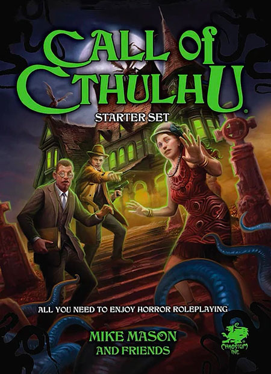
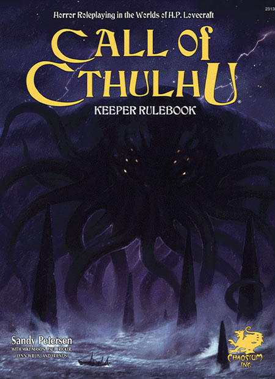
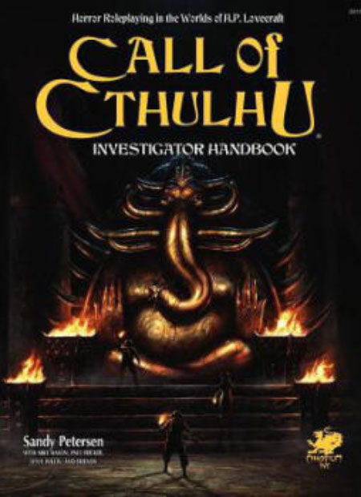

跑团是TRPG(桌上角色扮演游戏)的一种俗称,一般是主持人讲述一个故事背景后, 玩家根据故事背景、题材、氛围等,按规则选择人物的职业、性格、技能点数等, 并进行角色扮演和共同演绎来影响故事走向,后续故事走向是开放式结尾,但走向很大一部分取决于掷出的骰子点数。 克苏鲁跑团是跑团游戏的一种,只是氛围风格来自克苏鲁神话。
我们通常称其为《克苏鲁的呼唤》(Call of Cthulhu,缩写:CoC),他是改编自洛夫克拉夫特作品的一部角色扮演游戏, 其名来自作者的同名小说,也是以这本小说命名的第一部游戏, 游戏背景即洛夫克拉夫特的克苏鲁神话。它由混沌元素于1981年发行,现已更新至第七版。
克苏鲁的呼唤跑团游戏剧本,我们通常称为模组,模组难度与人数不定。


